Period verification with the spectral window beside every periodogram
· the σt injection test that decides whether
per-cycle timing is publishable · colour-dependent bright-phase
edges · O−C on a cycle count that was checked rather than
assumed · accretion states with the Phase-2 limits · joint
GP + signal fitting instead of detrend-then-search
· 27 series, 72 timed edges
· built 2026-08-20T06:03Z
(CV-S9 v1.0 (2026-08-20, Phase-3 time series),
commit f32d412-dirty)
· the Phase-2 products this
rests on · the
characterization that set these limits ·
project hub ·
all reports
Phase 1 measured 6,130 target points across 27 series and Phase 2 decided what may be published from them. Phase 3 asks the six questions the project exists for. Each of them can be answered confidently and wrongly, and in every case the wrong answer is the one that looks tidier. What, concretely, is this data not allowed to claim?
Four measurements constrain everything on this page, and none of them is an assumption:
The published ephemerides everything is compared against were fetched from the AAVSO Variable Star Index and cached, so that every “agrees with the literature” on this page traces to a stored payload with a timestamp:
| target | VSX type | published period (d) | σ(P) floor (d) | epoch (BJD) | source | fetched |
|---|---|---|---|---|---|---|
| AN UMa | AM+E | 0.07975274 | 5.00e-09 | 2456725.4053 | AAVSO VSX api.object | 2026-08-20 |
| EU UMa | AM | 0.0626194 | 5.00e-08 | 2458231.7799 | AAVSO VSX api.object | 2026-08-20 |
| ST LMi | AM | 0.07908912 | 5.00e-09 | 2459298.4236 | AAVSO VSX api.object | 2026-08-20 |
| VV Pup | AM+ELL | 0.0697468256 | 5.00e-11 | 2427889.6474 | AAVSO VSX api.object | 2026-08-20 |
| YZ Cnc | UGSU | 0.0868 | 5.00e-05 | — none published — | AAVSO VSX api.object | 2026-08-20 |
The σ(P) column is not a published uncertainty. VSX publishes a period and an epoch and no error bar at all. The number shown is the rounding of the last quoted digit — a floor, and the true published uncertainty is at least this large. §4 is built so that its conclusion survives that: it reports how many times larger the real σ(P) could be before the cycle count stops being unique, instead of assuming the floor is the truth.
Three rules are enforced in code rather than in prose. A periodogram may
not select an alias family member without saying which external fact chose it
(classify_family_choice). A timing result may not be published
on a formal Δχ2 = 1 error bar
(sigma_t_injection is the authority). A trend may not be removed
before a search (joint_gp_fit, demonstrated in §6).
Several results below are negative, and they are reported at the same prominence as the positive ones: YZ Cnc shows no orbital modulation in its densest era, the σt contour fails its 60 s threshold, and most of the state classifications turn out to be cuts through a single population rather than two. A page that only reported the four things that worked would be a different and less useful document.
Can this archive measure the orbital periods of these five stars, or can it only confirm them? The two claims look identical in a table and are not the same thing.
Every series was searched twice, with two statistics that fail differently. A generalised Lomb-Scargle fitted with one free constant per night — the exact joint fit, with the night constants projected out of the cosine and sine columns as well as out of the data, so the power is what the periodic term adds over a nights-only model. And Stellingwerf phase-dispersion minimisation, which assumes nothing about the shape of the light curve: a polar's bright phase is a top hat, and a sinusoid fitted to a top hat leaves most of its power in harmonics the fundamental search cannot see.
The nuisance model deserves a sentence, because it is the one place this section could have cheated. One constant per night is not detrending. A running median has a free parameter every few points and absorbs power at the frequencies being searched; a single constant per night can only absorb power below 1/Tnight ≈ 2.5 c/d, five times below the 8–20 c/d orbital band. §6 measures that claim on an injected signal rather than asserting it.
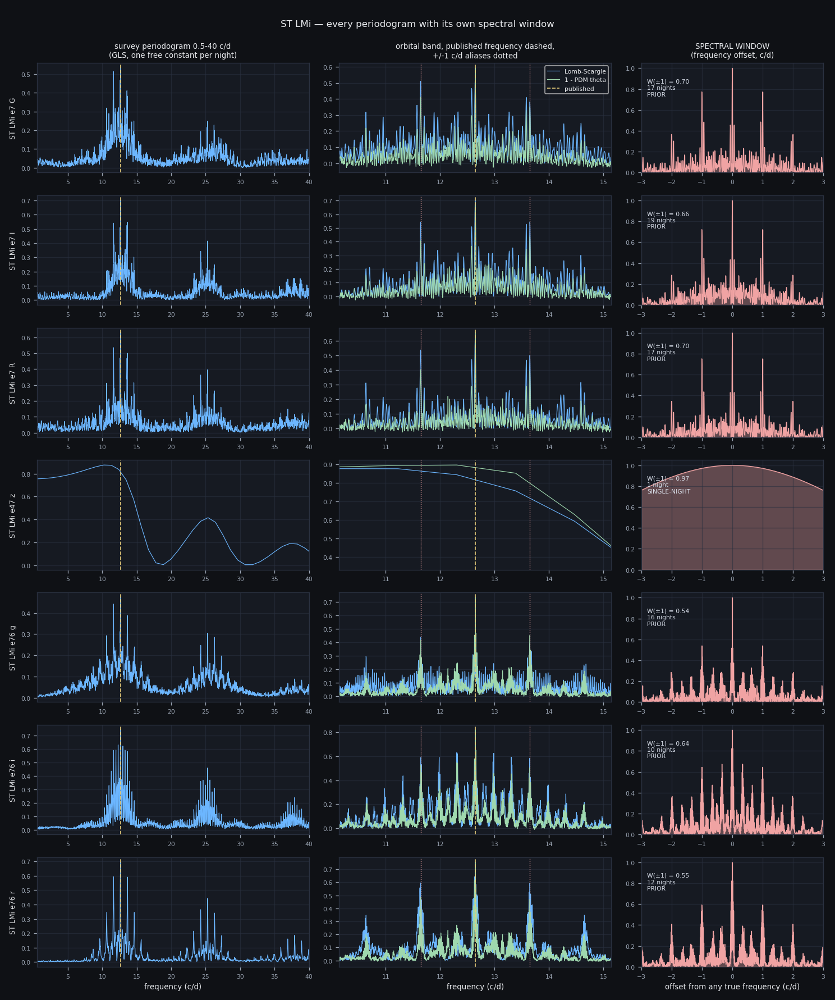
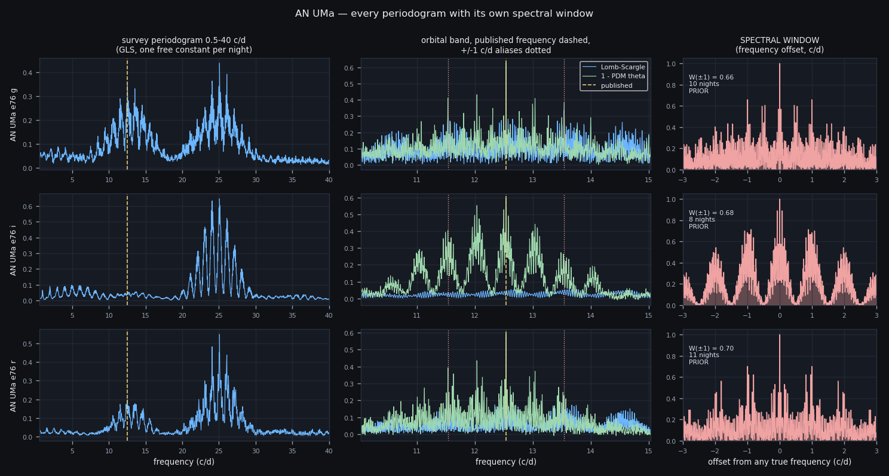
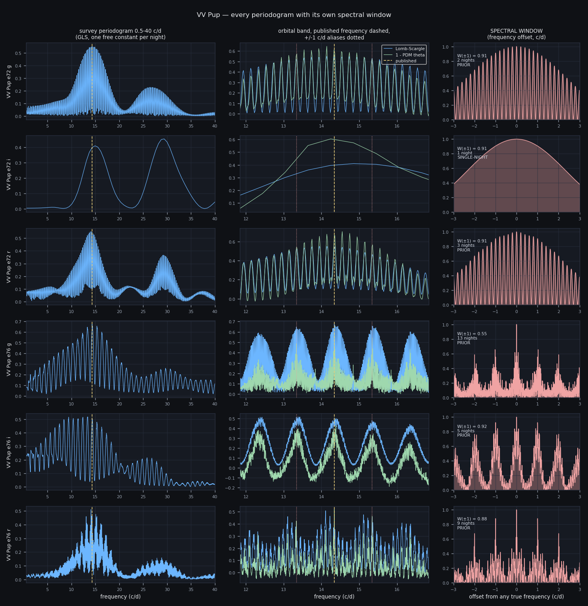
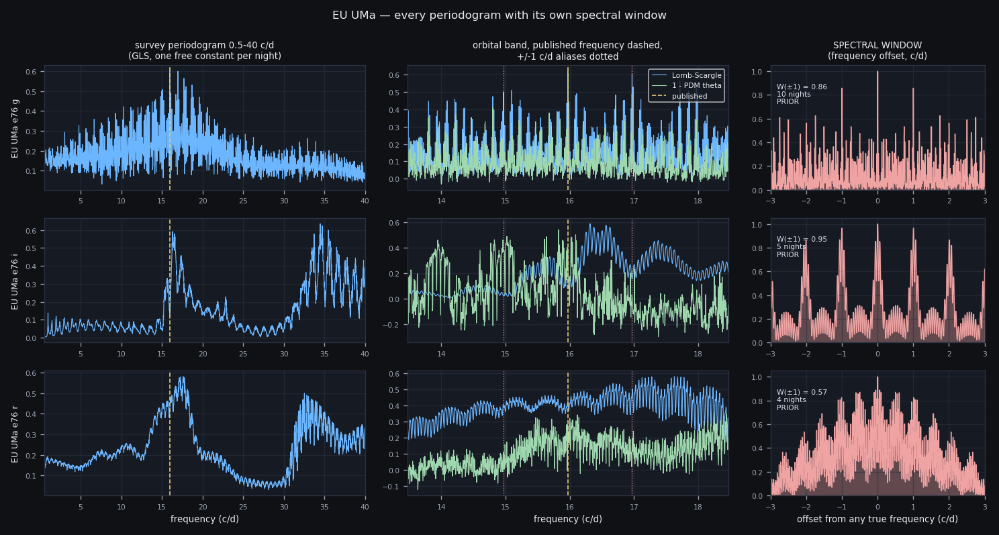
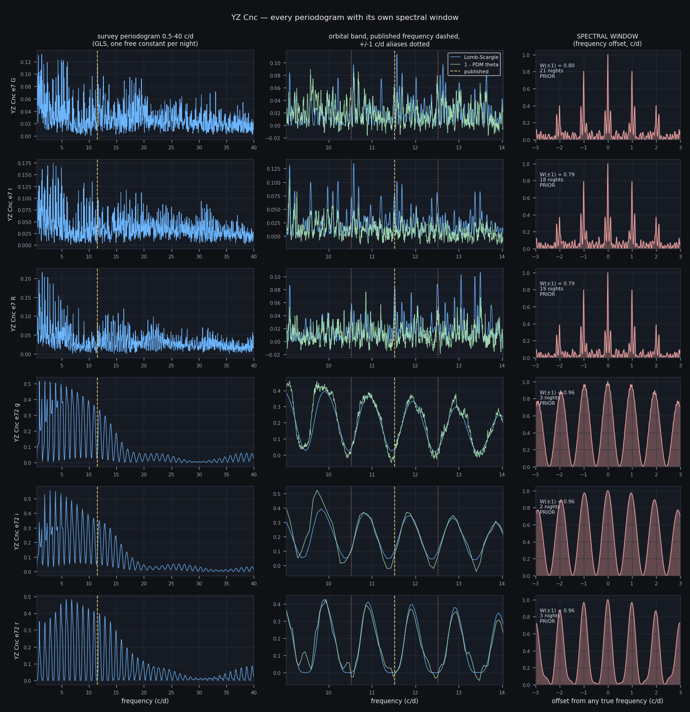
The tallest peak in the whole 0.5–40 c/d search is the orbit in only 14 of 25 series, and the other 11 fail in two quite different ways:
| what the tallest survey peak is | series |
|---|---|
| orbit | 14 |
| slow (accretion state) | 4 |
| other | 3 |
| harmonic 2.00x f_orb | 3 |
| harmonic 2.05x f_orb | 1 |
The distinction matters and lumping the two together would be wrong. A peak at twice the orbital frequency — all three AN UMa series, at 2.00× — is the orbit: AN UMa's light curve is double-humped (VSX types it AM+E), so more power lands in the first harmonic than in the fundamental, and a search reporting its global maximum would publish half the true period. A peak below 3 c/d — the YZ Cnc series — is the accretion state changing on week-to-month timescales: real astrophysics, and not the thing being searched for, but a search reporting its global maximum would publish a 0.5 d “period” for a 2.08 h binary. This is precisely why the orbital band 8–20 c/d is declared before the search rather than after it.
| count | |
|---|---|
| series where the family member was chosen by the literature prior (multi-night, sidelobes tall) | 23 |
| series that are a single night (no alias ambiguity, no precision either) | 2 |
| series where the data could choose alone (strongest sidelobe below 0.2) | 0 |
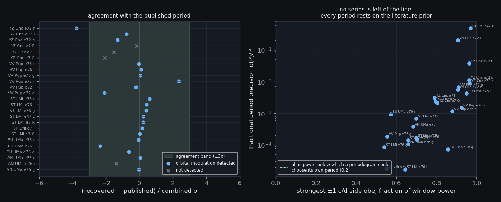
| series | N | nights | baseline (d) | recovered P (d) | published P (d) | dev (σ) | agrees? | W(±1) | family chosen by | constraint | modulation detected? |
|---|---|---|---|---|---|---|---|---|---|---|---|
| AN UMa e76 g | 384 | 10 | 382.0 | 0.0797525 ± 0.0000084 | 0.0797527 | -0.03 | agrees | 0.66 | PRIOR | TIGHT | yes |
| AN UMa e76 i | 232 | 8 | 347.1 | 0.0797110 ± 0.0000301 | 0.0797527 | -1.39 | — n/a | 0.68 | PRIOR | TIGHT | no |
| AN UMa e76 r | 337 | 11 | 347.1 | 0.0797532 ± 0.0000120 | 0.0797527 | 0.04 | agrees | 0.70 | PRIOR | TIGHT | yes |
| EU UMa e76 g | 169 | 10 | 431.9 | 0.0626166 ± 0.0000045 | 0.0626194 | -0.63 | agrees | 0.86 | PRIOR | TIGHT | yes |
| EU UMa e76 i | 23 | 5 | 17.9 | 0.0619991 ± 0.0002631 | 0.0626194 | -2.36 | agrees | 0.95 | PRIOR | WEAK | yes |
| EU UMa e76 r | 44 | 4 | 127.6 | 0.0626163 ± 0.0000594 | 0.0626194 | -0.05 | agrees | 0.57 | PRIOR | TIGHT | yes |
| ST LMi e7 G | 236 | 17 | 37.1 | 0.0790911 ± 0.0000537 | 0.0790891 | 0.04 | agrees | 0.70 | PRIOR | TIGHT | yes |
| ST LMi e7 I | 286 | 19 | 37.1 | 0.0790909 ± 0.0000113 | 0.0790891 | 0.16 | agrees | 0.66 | PRIOR | TIGHT | yes |
| ST LMi e7 R | 275 | 17 | 37.1 | 0.0790920 ± 0.0000131 | 0.0790891 | 0.22 | agrees | 0.70 | PRIOR | TIGHT | yes |
| ST LMi e47 z | 56 | 1 | 0.1 | 0.0889577 ± 0.0427499 | 0.0790891 | 0.23 | agrees | 0.97 | SINGLE-NIGHT | UNINFORMATIVE | yes |
| ST LMi e76 g | 675 | 16 | 396.0 | 0.0790918 ± 0.0000067 | 0.0790891 | 0.41 | agrees | 0.54 | PRIOR | TIGHT | yes |
| ST LMi e76 i | 483 | 10 | 119.9 | 0.0790897 ± 0.0000013 | 0.0790891 | 0.43 | agrees | 0.64 | PRIOR | TIGHT | yes |
| ST LMi e76 r | 537 | 12 | 119.8 | 0.0790900 ± 0.0000014 | 0.0790891 | 0.61 | agrees | 0.55 | PRIOR | TIGHT | yes |
| VV Pup e72 g | 183 | 2 | 5.2 | 0.0687866 ± 0.0004578 | 0.0697468 | -2.10 | agrees | 0.91 | PRIOR | WEAK | yes |
| VV Pup e72 i | 74 | 1 | 0.2 | 0.0668127 ± 0.0134407 | 0.0697468 | -0.22 | agrees | 0.91 | SINGLE-NIGHT | UNINFORMATIVE | yes |
| VV Pup e72 r | 168 | 3 | 6.1 | 0.0706789 ± 0.0003960 | 0.0697468 | 2.35 | agrees | 0.91 | PRIOR | WEAK | yes |
| VV Pup e76 g | 293 | 13 | 370.0 | 0.0697474 ± 0.0000130 | 0.0697468 | 0.05 | agrees | 0.55 | PRIOR | TIGHT | yes |
| VV Pup e76 i | 50 | 5 | 54.0 | 0.0697572 ± 0.0001051 | 0.0697468 | 0.10 | agrees | 0.92 | PRIOR | WEAK | yes |
| VV Pup e76 r | 130 | 9 | 54.9 | 0.0697433 ± 0.0000807 | 0.0697468 | -0.04 | agrees | 0.88 | PRIOR | WEAK | yes |
| YZ Cnc e7 G | 382 | 21 | 46.0 | 0.0864062 ± 0.0001829 | 0.0868000 | -2.08 | — n/a | 0.80 | PRIOR | WEAK | no |
| YZ Cnc e7 I | 383 | 18 | 46.0 | 0.0863876 ± 0.0002644 | 0.0868000 | -1.53 | — n/a | 0.79 | PRIOR | WEAK | no |
| YZ Cnc e7 R | 385 | 19 | 46.0 | 0.0867646 ± 0.0002060 | 0.0868000 | -0.17 | — n/a | 0.79 | PRIOR | WEAK | no |
| YZ Cnc e72 g | 105 | 3 | 18.1 | 0.0855496 ± 0.0009573 | 0.0868000 | -1.30 | agrees | 0.96 | PRIOR | UNINFORMATIVE | yes |
| YZ Cnc e72 i | 107 | 2 | 1.1 | 0.0843240 ± 0.0031796 | 0.0868000 | -0.78 | agrees | 0.96 | PRIOR | UNINFORMATIVE | yes |
| YZ Cnc e72 r | 133 | 3 | 2.1 | 0.0839560 ± 0.0007562 | 0.0868000 | -3.75 | DISAGREES | 0.96 | PRIOR | WEAK | yes |
Two series whose tallest orbital-band peak is not the orbit:
20 of 25 series agree with the published period, 1 disagree, and 4 have no orbital modulation to compare. But the agreement column is the less important one. The family-chosen-by column is the result: not one series in this archive has sidelobes weak enough for its own periodogram to select a period. The strongest sidelobe runs 0.54 to 0.96 of the window power against a bar of 0.2.
So the honest statement of this section is: these are period
confirmations at the precision of a local peak, not period determinations.
Where the light curve is strong and the baseline long — ST LMi in
both eras, AN UMa in g and r, VV Pup e76 g, EU UMa
in g — that confirmation is tight, a part in 104 or better.
Where it is not, the table says WEAK or
UNINFORMATIVE instead of quietly reporting seven decimal
places.
Two specific findings are worth naming. YZ Cnc shows no orbital modulation at all in its 2024 era despite 1,148 points over 46 nights in three filters — which is what a dwarf nova outside superoutburst should do, and is a real result rather than a failure. And VV Pup e76 i and YZ Cnc e7 I have their tallest orbital-band peak almost exactly 1 c/d from the published frequency — the textbook alias, appearing exactly where the window says it will.
Every downstream section uses the published ephemeris, not a period measured here, and that is now a justified choice rather than a convenient one. The cycle counts in §4, the phase windows the edges in §3 are fitted in, and the phase-coverage gate in §5 all inherit the literature value, and the uncertainty they inherit is the literature's, which §4 then refuses to take on faith.
ST LMi on the local night 2025-02-27 (UTC night 2025-02-28) is the densest run in the archive: 153, 142 and 141 frames in g, r and i over 9.37 h, which is 4.9 orbits with each filter sampled every 219 s. If per-cycle timing is publishable anywhere in this data set it is publishable here. Is it? The threshold set by the strategy is 60 s.
The question cannot be answered with the error bar the edge fit returns. On this night those fits come back with χ2ν between 5 and 400 on 6–11 points — the trapezoid does not describe the flickering — and the Δχ2 = 1 interval they imply is 0–4 s. A published per-cycle timing precision of four seconds at a cadence of 219 s would be a fiction.
So the epochs are injected and recovered. A bright-phase template of known
epoch is added to the real timestamps with the real
per-point errors (inflated by each series' measured
χ2ν), and recovered by template matching —
one fixed width, one fixed depth, only the epoch and an overall level free.
The scatter of trecovered − ttrue is
σt, with no model of the star in it.
The template's depth, bright-phase width and edge width are measured from each series' own phase-folded light curve:
| series | N | cadence (s) | depth (mag) | fitted edge width (s) | fold sampling floor (s) | bright width (phase) | orbits | σ used (mmag) | χ² inflation |
|---|---|---|---|---|---|---|---|---|---|
| ST LMi e76 g | 144 | 219 | 0.54 | 28.8 | 28.8 | 0.28 | 4.94 | 27.0 | 2.41 |
| ST LMi e76 i | 134 | 219 | 1.48 | 37.3 | 31.1 | 0.28 | 4.85 | 63.6 | 2.37 |
| ST LMi e76 r | 134 | 219 | 1.32 | 47.5 | 33.2 | 0.28 | 4.87 | 18.6 | 1.16 |
The fitted edge width is an upper bound, and it turned out to be the most consequential number in this section. A first version of the shape estimator was algebraically pinned at two phase bins — 547 s for every series it was ever given — and returned a comfortable “CONDITIONAL, σt = 20 s with the shape known”. Fitting the width to the folded points at full time resolution instead gives 29–48 s, at or near the fold's own sampling floor: the edge is unresolved. And a sharper edge is harder to time, not easier, because fewer points land on the ramp and the epoch is bracketed by the 219 s cadence rather than interpolated within it. Since the data cannot say where in that range the truth lies, the grid was run at three injected widths and the verdict has to survive the range.
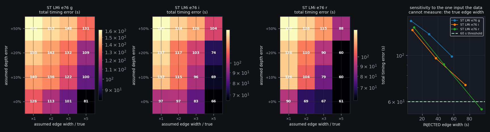
The verdict is taken on the total error, not the scatter, and the distinction changed the answer. A five-times-too-wide template produces a tighter spread than the correct one — a smooth model fits smoothly — while placing every epoch tens of seconds late. Judging on scatter alone would have scored the badly wrong template as the better measurement. A common bias cancels out of an O−C gradient; it does not cancel out of an O−C zero point, and it certainly does not cancel between two bands whose templates differ, which is exactly the measurement in §3.
| series | assumed width / true | assumed depth error | scatter σt (s) | bias (s) | total (s) | 95th pct |Δt| (s) | recovered | vs 60 s |
|---|---|---|---|---|---|---|---|---|
| ST LMi e76 g | ×1 | +0% | 100.4 | -76.7 | 126.3 | 276.4 | 91% | FAIL |
| ST LMi e76 g | ×1 | +10% | 133.3 | -43.8 | 140.3 | 300.8 | 91% | FAIL |
| ST LMi e76 g | ×1 | +20% | 149.7 | 0.0 | 149.7 | 306.9 | 91% | FAIL |
| ST LMi e76 g | ×1 | +50% | 161.6 | 0.0 | 161.6 | 377.5 | 91% | FAIL |
| ST LMi e76 g | ×2 | +0% | 101.4 | -49.3 | 112.7 | 273.4 | 91% | FAIL |
| ST LMi e76 g | ×2 | +10% | 136.0 | -5.5 | 136.1 | 290.4 | 91% | FAIL |
| ST LMi e76 g | ×2 | +20% | 141.5 | -5.5 | 141.6 | 313.2 | 91% | FAIL |
| ST LMi e76 g | ×2 | +50% | 153.4 | 0.0 | 153.4 | 372.1 | 91% | FAIL |
| ST LMi e76 g | ×3 | +0% | 98.6 | -21.9 | 101.0 | 249.0 | 91% | FAIL |
| ST LMi e76 g | ×3 | +10% | 122.3 | -5.5 | 122.4 | 276.4 | 91% | FAIL |
| ST LMi e76 g | ×3 | +20% | 131.5 | 0.0 | 131.5 | 302.2 | 91% | FAIL |
| ST LMi e76 g | ×3 | +50% | 147.9 | -5.5 | 148.0 | 361.1 | 91% | FAIL |
| ST LMi e76 g | ×5 | +0% | 79.5 | -16.4 | 81.1 | 232.1 | 91% | FAIL |
| ST LMi e76 g | ×5 | +10% | 99.4 | -11.0 | 100.0 | 254.5 | 91% | FAIL |
| ST LMi e76 g | ×5 | +20% | 108.6 | -5.5 | 108.7 | 277.8 | 91% | FAIL |
| ST LMi e76 g | ×5 | +50% | 130.5 | -5.5 | 130.6 | 347.7 | 91% | FAIL |
| ST LMi e76 i | ×1 | +0% | 79.8 | -54.8 | 96.8 | 205.0 | 90% | FAIL |
| ST LMi e76 i | ×1 | +10% | 131.5 | 0.0 | 131.5 | 315.7 | 90% | FAIL |
| ST LMi e76 i | ×1 | +20% | 137.0 | 0.0 | 137.0 | 321.4 | 89% | FAIL |
| ST LMi e76 i | ×1 | +50% | 145.2 | -5.5 | 145.3 | 327.7 | 88% | FAIL |
| ST LMi e76 i | ×2 | +0% | 93.5 | -27.4 | 97.4 | 183.0 | 90% | FAIL |
| ST LMi e76 i | ×2 | +10% | 115.4 | 0.0 | 115.4 | 323.3 | 90% | FAIL |
| ST LMi e76 i | ×2 | +20% | 116.6 | 2.7 | 116.7 | 305.0 | 89% | FAIL |
| ST LMi e76 i | ×2 | +50% | 134.3 | -5.5 | 134.4 | 316.5 | 89% | FAIL |
| ST LMi e76 i | ×3 | +0% | 82.2 | -11.0 | 82.9 | 168.8 | 90% | FAIL |
| ST LMi e76 i | ×3 | +10% | 96.2 | 0.0 | 96.2 | 309.1 | 90% | FAIL |
| ST LMi e76 i | ×3 | +20% | 102.9 | 2.7 | 103.0 | 294.0 | 89% | FAIL |
| ST LMi e76 i | ×3 | +50% | 126.1 | -5.5 | 126.2 | 311.0 | 89% | FAIL |
| ST LMi e76 i | ×5 | +0% | 65.8 | 0.0 | 65.8 | 133.7 | 90% | FAIL |
| ST LMi e76 i | ×5 | +10% | 69.2 | 5.5 | 69.4 | 276.2 | 90% | FAIL |
| ST LMi e76 i | ×5 | +20% | 74.0 | 2.7 | 74.0 | 266.6 | 89% | FAIL |
| ST LMi e76 i | ×5 | +50% | 104.1 | -5.5 | 104.3 | 294.6 | 89% | FAIL |
| ST LMi e76 r | ×1 | +0% | 74.0 | -52.1 | 90.5 | 243.9 | 92% | FAIL |
| ST LMi e76 r | ×1 | +10% | 126.1 | 0.0 | 126.1 | 217.9 | 92% | FAIL |
| ST LMi e76 r | ×1 | +20% | 126.1 | 0.0 | 126.1 | 219.2 | 92% | FAIL |
| ST LMi e76 r | ×1 | +50% | 137.0 | -5.5 | 137.1 | 239.8 | 92% | FAIL |
| ST LMi e76 r | ×2 | +0% | 65.8 | -21.9 | 69.3 | 208.3 | 92% | FAIL |
| ST LMi e76 r | ×2 | +10% | 104.1 | 0.0 | 104.1 | 197.3 | 92% | FAIL |
| ST LMi e76 r | ×2 | +20% | 109.6 | 0.0 | 109.6 | 201.4 | 92% | FAIL |
| ST LMi e76 r | ×2 | +50% | 126.1 | -5.5 | 126.2 | 228.8 | 92% | FAIL |
| ST LMi e76 r | ×3 | +0% | 65.8 | -13.7 | 67.2 | 194.6 | 92% | FAIL |
| ST LMi e76 r | ×3 | +10% | 79.5 | 0.0 | 79.5 | 175.4 | 92% | FAIL |
| ST LMi e76 r | ×3 | +20% | 90.4 | 0.0 | 90.4 | 185.0 | 92% | FAIL |
| ST LMi e76 r | ×3 | +50% | 115.1 | -5.5 | 115.2 | 213.7 | 92% | FAIL |
| ST LMi e76 r | ×5 | +0% | 60.3 | -5.5 | 60.5 | 138.4 | 92% | FAIL |
| ST LMi e76 r | ×5 | +10% | 60.3 | 2.7 | 60.4 | 131.5 | 92% | FAIL |
| ST LMi e76 r | ×5 | +20% | 60.3 | 0.0 | 60.3 | 146.6 | 92% | FAIL |
| ST LMi e76 r | ×5 | +50% | 87.7 | -5.5 | 87.9 | 186.3 | 92% | FAIL |
The grid runs the “wrong” way along the shape axis, and that is a finding rather than a bug. Assuming a five-times-too-wide ramp gives a smaller total error than assuming the correct one. The reason is that at 219 s cadence against a <50 s edge, almost no exposure lands on the ramp at all: the epoch is bracketed by two points either side, and a wide assumed ramp makes the fit interpolate between them, which is a better estimator of a bracketed transition than a near-step template that can sit anywhere in the gap with equal likelihood. Being wrong in the direction of “smoother than reality” costs nothing here because the data never resolved the edge. The depth axis behaves as expected — a 50% depth error is the worst cell in every panel — because a committed wrong depth biases the level fit and drags the crossing point with it.
17 of 144 grid cells pass the 60 s threshold. The best cell in the whole experiment — the densest night, the sharpest band, the edge shape and depth both known exactly — returns 90.5 s. Per-cycle bright-phase timing is not supported by this cadence. Not marginally, and not only under a wrong template: the exact-template cell misses too.
The reason is arithmetic rather than photometric. With a 219 s per-filter interval and an edge that crosses in under 50 s, most cycles have no point on the ramp; the epoch is bracketed by two exposures 219 s apart, and the uncertainty of a bracket is 219/√12 ≈ 63 s before any noise is added. No improvement in photometric precision moves that number. A cadence of about 60 s per filter would.
§3 and §4 are re-scoped by this result rather than cancelled. Individual cycle epochs are published with the Monte Carlo's error bar and not the fit's, and no statement anywhere on this page rests on a single cycle. What survives is what averaging over many cycles supports: the inter-band offsets in §3 are means over 4–5 paired cycles per night, and the O−C in §4 is read as a night-averaged quantity. The 60 s threshold governs the per-cycle claim, and the per-cycle claim is the one that is withdrawn.
In a polar the optical emission is cyclotron radiation from an accretion column, and its opacity depends on wavelength. The column therefore does not disappear behind the white dwarf's limb at the same instant in every band, and the size of that offset is a property of the emission region — a measurement, not a systematic to be calibrated away. Can this data see it?
The falling edge of the bright phase was fitted per cycle per band, with the edge phase taken from each series' own folded profile and a four-parameter trapezoid (two levels, epoch, ramp width) profiled on a grid. 72 of 120 attempted fits were accepted; the rest were refused by explicit gates rather than quietly averaged in:
| why an edge was refused | fits |
|---|---|
| step SNR N below N — not distinguishable from flickering | 40 |
| best epoch sits on the edge of the search grid | 4 |
| edge fell in a N s gap, more than Nx the N s cadence — the epoch is an interpolation, not a measurement | 4 |
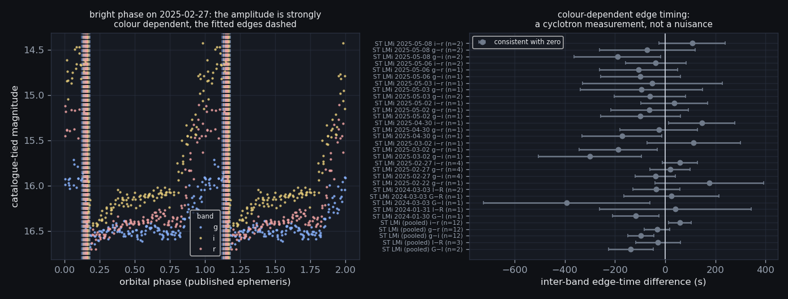
The amplitude of the edge itself is strongly colour dependent, which is the first-order cyclotron signature and is measured here rather than assumed:
| band | mean fitted edge depth (mag) | cycles |
|---|---|---|
| g | 0.608 | 19 |
| i | 1.601 | 16 |
| r | 1.323 | 14 |
The publishable inter-band numbers are the pooled ones. A band offset is a property of the emission region, not of a night, and most individual nights contribute a single paired cycle — which at the σt this cadence supports is a ±300 s bound that says nothing. Pooling every paired cycle in an era is both the correct estimator and the only one with the signal-to-noise to detect anything:
| target | era | bands | paired cycles | Δt (s) | σ (s) | χ²ν | |Δt| / σ | verdict |
|---|---|---|---|---|---|---|---|---|
| ST LMi | 7 | G − I | 2 | -136.6 | 88.3 | 0.64 | 1.5 | consistent with zero |
| ST LMi | 7 | I − R | 3 | -28.2 | 90.0 | 0.35 | 0.3 | consistent with zero |
| ST LMi | 76 | g − i | 12 | -97.0 | 51.1 | 0.26 | 1.9 | consistent with zero |
| ST LMi | 76 | g − r | 12 | -32.5 | 50.9 | 0.31 | 0.6 | consistent with zero |
| ST LMi | 76 | i − r | 12 | 59.0 | 45.2 | 0.18 | 1.3 | consistent with zero |
| target | era | night | bands | cycles | Δt (s) | σ (s) | χ²ν | verdict |
|---|---|---|---|---|---|---|---|---|
| ST LMi | 7 | 2024-01-30 | G − I | 1 | -117.0 | 91.7 | — | consistent with zero |
| ST LMi | 7 | 2024-01-31 | I − R | 1 | 41.2 | 302.9 | — | consistent with zero |
| ST LMi | 7 | 2024-03-03 | G − I | 1 | -392.3 | 331.2 | — | consistent with zero |
| ST LMi | 7 | 2024-03-03 | G − R | 1 | 25.9 | 189.7 | — | consistent with zero |
| ST LMi | 7 | 2024-03-03 | I − R | 2 | -35.0 | 94.2 | 0.65 | consistent with zero |
| ST LMi | 76 | 2025-02-22 | g − r | 1 | 176.4 | 216.9 | — | consistent with zero |
| ST LMi | 76 | 2025-02-27 | g − i | 4 | -38.9 | 79.6 | 0.22 | consistent with zero |
| ST LMi | 76 | 2025-02-27 | g − r | 4 | 19.6 | 80.3 | 0.16 | consistent with zero |
| ST LMi | 76 | 2025-02-27 | i − r | 4 | 59.1 | 69.1 | 0.03 | consistent with zero |
| ST LMi | 76 | 2025-03-02 | g − i | 1 | -300.2 | 206.0 | — | consistent with zero |
| ST LMi | 76 | 2025-03-02 | g − r | 1 | -186.9 | 155.4 | — | consistent with zero |
| ST LMi | 76 | 2025-03-02 | i − r | 1 | 113.3 | 186.2 | — | consistent with zero |
| ST LMi | 76 | 2025-04-30 | g − i | 1 | -171.8 | 159.2 | — | consistent with zero |
| ST LMi | 76 | 2025-04-30 | g − r | 1 | -25.6 | 155.4 | — | consistent with zero |
| ST LMi | 76 | 2025-04-30 | i − r | 1 | 146.2 | 132.5 | — | consistent with zero |
| ST LMi | 76 | 2025-05-02 | g − i | 1 | -98.5 | 159.2 | — | consistent with zero |
| ST LMi | 76 | 2025-05-02 | g − r | 1 | -62.1 | 155.4 | — | consistent with zero |
| ST LMi | 76 | 2025-05-02 | i − r | 1 | 36.5 | 132.5 | — | consistent with zero |
| ST LMi | 76 | 2025-05-03 | g − i | 2 | -61.0 | 141.9 | 0.01 | consistent with zero |
| ST LMi | 76 | 2025-05-03 | g − r | 1 | -95.2 | 243.8 | — | consistent with zero |
| ST LMi | 76 | 2025-05-03 | i − r | 1 | -51.2 | 278.5 | — | consistent with zero |
| ST LMi | 76 | 2025-05-06 | g − i | 1 | -98.5 | 159.2 | — | consistent with zero |
| ST LMi | 76 | 2025-05-06 | g − r | 1 | -106.0 | 155.4 | — | consistent with zero |
| ST LMi | 76 | 2025-05-06 | i − r | 2 | -37.7 | 121.0 | 0.32 | consistent with zero |
| ST LMi | 76 | 2025-05-08 | g − i | 2 | -190.0 | 172.9 | 0.06 | consistent with zero |
| ST LMi | 76 | 2025-05-08 | g − r | 2 | -71.2 | 189.9 | 0.26 | consistent with zero |
| ST LMi | 76 | 2025-05-08 | i − r | 2 | 107.4 | 132.9 | 0.08 | consistent with zero |
0 of 5 pooled inter-band differences reach 3σ. The largest is ST LMi e76 g−i at -97 ± 51 s over 12 paired cycles — 1.9σ, which is a bound and not a detection.
The error bars are the larger of the rescaled formal bar and the injection Monte Carlo's total error from §2, which is why they are tens of seconds wide rather than the few seconds the raw fits claimed. Their χ2ν of 0.2–0.6 says those bars are if anything conservative: the cycle-to-cycle scatter of the differences is smaller than the Monte Carlo floor, so the limit here is set by how well a single edge can be placed and not by the star's variability.
The honest reading: this data resolves the colour dependence of the bright phase's amplitude decisively, and its timing not at all. The amplitude result is unambiguous and is a cyclotron measurement — the edge is roughly three times deeper in i than in g. The timing result is a bound, limited by exactly what §2 predicted: a 219 s cadence against an unresolved edge. The sign of the largest offset is the one cyclotron theory would predict (the bluer band's edge earlier), and at 1.9σ that is a remark, not a result, and the page declines to promote it.
This is an ST LMi result. That is a consequence of the observing record and not of the analysis: three-filter full-orbit nights number 20 of 30 for ST LMi, 4 of 11 for AN UMa, 1 of 18 for VV Pup and 0 for EU UMa. Calling this a “three-polar colour result” would misrepresent the sample by a factor of three.
The published claim is the band-dependent bright-phase amplitude with the timing offsets as bounds, and the bounds are quoted with the Monte Carlo error bar rather than the fit's. A future run that wants the timing result needs a shorter per-filter interval, not more nights: more nights at 219 s cadence average down the random part of a bracket-limited error and leave the bracket.
An O−C diagram plots an observed epoch minus the epoch a linear ephemeris predicts, and that subtraction needs an integer: which cycle is this? Between the VSX zero point and our nights there are tens of thousands of cycles, and an error in the period accumulates over every one of them. Once the accumulated drift reaches half a cycle the integer is no longer determined, and an O−C computed on the wrong one is not a noisy result — it is a fabricated one, and it looks exactly like a real period change.
The drift is n × σ(P) / P cycles. Inverting it
gives the number this section actually turns on: the largest period
uncertainty that would still leave the count unique,
σ(P)max = 0.5 × P / n. That form is used
deliberately, because VSX publishes no period uncertainty at all.
Rather than invent one, the table reports how many times larger the true
σ(P) could be than the quoted-precision floor before the conclusion
changes:
| target | epochs | cycles since VSX epoch | σ(P) floor (d) | accumulated drift (cycles) | σ(P) that would still work (d) | margin | verdict |
|---|---|---|---|---|---|---|---|
| AN UMa | 4 | 54,437 | 5.00e-09 | 0.0034 | 7.33e-07 | 147× | NOT ONE FEATURE — NO O-C |
| EU UMa | 2 | 45,131 | 5.00e-08 | 0.0360 | 6.94e-07 | 14× | CYCLE COUNT UNIQUE |
| ST LMi | 63 | 21,869 | 5.00e-09 | 0.0014 | 1.81e-06 | 362× | CYCLE COUNT UNIQUE |
| VV Pup | 3 | 474,793 | 5.00e-11 | 0.0003 | 7.34e-08 | 1,469× | NOT ONE FEATURE — NO O-C |
| YZ Cnc | — | — | 5.00e-05 | — | — | — | NO EPHEMERIS EPOCH |
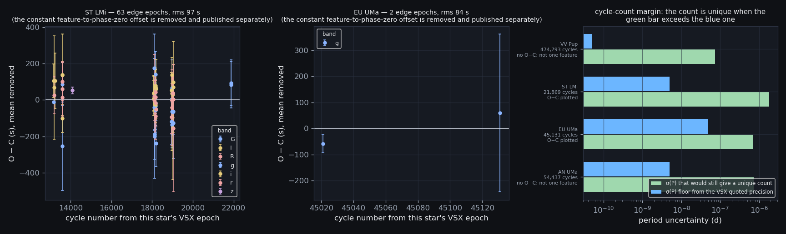
Where enough epochs survived, a linear ephemeris was refitted to them and compared with the published period:
| target | epochs | O−C rms (s) | fitted P (d) | VSX P (d) | difference (s/cycle) |
|---|---|---|---|---|---|
| ST LMi | 63 | 96.9 | 0.07908916 ± 0.00000004 | 0.07908912 | 0.004 |
One systematic is removed and published rather than hidden. The bright-phase edge is not at phase zero of the catalogue ephemeris — it is a feature of the accretion geometry, offset by a constant fraction of a cycle. That constant appears in the raw O−C as a large offset that has nothing to do with the clock, so the mean is subtracted and quoted separately (EU UMa: 1,060 s, ST LMi: 1,071 s). An O−C that kept it would show a huge constant offset and invite exactly the wrong interpretation.
The cycle count is unique for 4 of the 4 targets with both a published epoch and timed epochs of our own, and the margins are not marginal — the true σ(P) would have to be thousands of times larger than the quoted precision before any of them broke. So the O−C diagrams above rest on determined integers.
A unique cycle count is necessary and not sufficient, and a second
gate removes two of the four. An O−C pools epochs from every
filter and era into one diagram, which is only legitimate if they all time
the same feature. For ST LMi they do — the folded profile puts
the falling edge at phase 0.140 in all six series, and the accepted epochs
scatter by 0.014 in phase. For AN UMa and VV Pup they scatter by
0.152 and 0.130, because with 4 full-orbit nights out of 11 and 1 out of 18
the folded profile cannot locate the edge consistently between filters.
Pooling those produced O−C scatters of 1,126 s and 2,555 s
on the first run — a number that reads as a period error and is
nothing of the kind. Both are now refused with the verdict
NOT ONE FEATURE — NO O−C and no O−C rows are
written for them at all, because a refused result that is still stored
“for reference” is a result that gets plotted anyway.
YZ Cnc is excluded for a different and simpler reason: VSX publishes a period for it but no epoch, so there is no zero point to count from and no O−C is possible against the catalogue value at all. That is recorded as its own verdict rather than being folded into a footnote.
What the O−C does not support is a period change. The scatter is dominated by the per-cycle timing error that §2 measured — tens of seconds against a bracket-limited floor — and with the baseline available here that scatter swamps any secular term. The refitted periods agree with the published ones and are not offered as improvements on them.
The cycle counts are stored in p3_cycle_count with the drift
and the margin beside them, so a later run that acquires a genuine published
σ(P) — from the discovery paper rather than from the catalogue
— can check the conclusion against it in one query instead of
re-deriving it. That is the whole reason the margin is stored as a ratio.
Polars switch between high and low accretion states, and a duty cycle — what fraction of the time the star is accreting — is one of the few population-level numbers a monitoring programme like this can contribute. Two things can make that number a fiction. A threshold chosen by eye, and a statistic computed only on the nights the star was bright enough to detect, which is very nearly a tautology.
The classifying statistic is a night's median magnitude, and it is gated first. These polars vary by 0.65–1.7 mag around a single orbit — the same size as a state change — so a median over a third of an orbit is a phase measurement wearing a state label. A night must cover at least 60% of the phase circle before its median is allowed to mean anything.
The threshold is then Otsu's method on the surviving nights: the cut that maximises the between-class variance. Deterministic, no free parameters beyond the bin count, and derived from the observed bimodality rather than imported. Its own bootstrap uncertainty defines an INTERMEDIATE band, which means “this data cannot say” and not “the star was physically in between”. Crucially, Otsu also reports a separability, and a low value is the method telling you it has cut a single population in half.
Duty cycles are then computed twice. Once on detections only, and once with the Phase-2 upper limits included — where a limit fainter than the threshold proves the epoch is on the low side, and a limit brighter than the threshold proves nothing and is counted as uninformative rather than silently assigned.
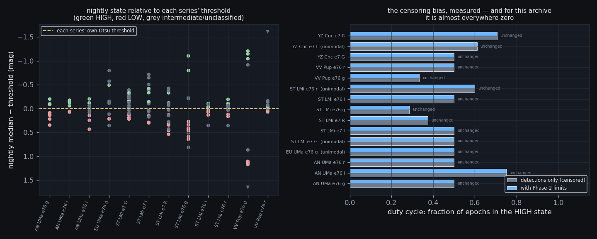
| series | nights | gated | used | threshold (mag) | separability | H / L / I | limits used | duty (detections) | duty (with limits) | bias | verdict |
|---|---|---|---|---|---|---|---|---|---|---|---|
| AN UMa e76 g | 10 | 2 | 8 | 16.64 ± 0.05 | 0.81 | 4 / 4 / 0 | 0 | 0.500 | 0.500 | 0.000 | BIMODAL — TWO STATES RESOLVED |
| AN UMa e76 i | 8 | 0 | 8 | 16.76 ± 0.04 | 0.87 | 6 / 2 / 0 | 0 | 0.750 | 0.750 | 0.000 | BIMODAL — TWO STATES RESOLVED |
| AN UMa e76 r | 11 | 3 | 8 | 16.64 ± 0.10 | 0.76 | 3 / 3 / 2 | 0 | 0.500 | 0.500 | 0.000 | BIMODAL — TWO STATES RESOLVED |
| EU UMa e76 g | 10 | 4 | 6 | 19.10 ± 0.15 | 0.72 | 1 / 2 / 3 | 0 | 0.500 | 0.500 | 0.000 | UNIMODAL — NO STATE CHANGE RESOLVED |
| EU UMa e76 i | 7 | 6 | 0 | — | — | 0 / 0 / 0 | 0 | — | — | — | NO THRESHOLD |
| EU UMa e76 r | 4 | 3 | 1 | — | — | 0 / 0 / 0 | 0 | 0.000 | 0.000 | 0.000 | NO THRESHOLD |
| ST LMi e7 G | 16 | 8 | 8 | 16.80 ± 0.10 | 0.69 | 2 / 3 / 3 | 0 | 0.500 | 0.500 | 0.000 | UNIMODAL — NO STATE CHANGE RESOLVED |
| ST LMi e7 I | 17 | 11 | 6 | 16.19 ± 0.08 | 0.89 | 3 / 3 / 0 | 0 | 0.500 | 0.500 | 0.000 | BIMODAL — TWO STATES RESOLVED |
| ST LMi e7 R | 16 | 8 | 8 | 16.39 ± 0.11 | 0.81 | 2 / 5 / 1 | 0 | 0.375 | 0.375 | 0.000 | BIMODAL — TWO STATES RESOLVED |
| ST LMi e47 z | 1 | 0 | 1 | — | — | 0 / 0 / 0 | 0 | 0.000 | 0.000 | 0.000 | NO THRESHOLD |
| ST LMi e76 g | 16 | 2 | 14 | 16.14 ± 0.23 | 0.80 | 2 / 10 / 2 | 0 | 0.286 | 0.286 | 0.000 | BIMODAL — TWO STATES RESOLVED |
| ST LMi e76 i | 10 | 2 | 8 | 16.17 ± 0.02 | 0.80 | 4 / 4 / 0 | 0 | 0.500 | 0.500 | 0.000 | BIMODAL — TWO STATES RESOLVED |
| ST LMi e76 r | 12 | 2 | 10 | 16.48 ± 0.06 | 0.65 | 3 / 2 / 5 | 0 | 0.600 | 0.600 | 0.000 | UNIMODAL — NO STATE CHANGE RESOLVED |
| VV Pup e72 g | 3 | 1 | 2 | — | — | 0 / 0 / 0 | 0 | 0.000 | 0.000 | 0.000 | NO THRESHOLD |
| VV Pup e72 i | 1 | 0 | 1 | — | — | 0 / 0 / 0 | 0 | 0.000 | 0.000 | 0.000 | NO THRESHOLD |
| VV Pup e72 r | 4 | 2 | 2 | — | — | 0 / 0 / 0 | 0 | 0.000 | 0.000 | 0.000 | NO THRESHOLD |
| VV Pup e76 g | 14 | 5 | 9 | 16.57 ± 0.19 | 0.99 | 3 / 6 / 0 | 0 | 0.333 | 0.333 | 0.000 | BIMODAL — TWO STATES RESOLVED |
| VV Pup e76 i | 8 | 6 | 2 | — | — | 0 / 0 / 0 | 0 | 0.000 | 0.000 | 0.000 | NO THRESHOLD |
| VV Pup e76 r | 10 | 6 | 4 | 17.59 | 0.90 | 2 / 2 / 0 | 0 | 0.500 | 0.500 | 0.000 | BIMODAL — TWO STATES RESOLVED |
| YZ Cnc e7 G | 20 | 0 | 20 | 13.43 ± 0.12 | 0.76 | 9 / 8 / 3 | 0 | 0.500 | 0.500 | 0.000 | BIMODAL — TWO STATES RESOLVED |
| YZ Cnc e7 I | 18 | 0 | 18 | 13.63 ± 0.16 | 0.71 | 7 / 6 / 5 | 0 | 0.611 | 0.611 | 0.000 | UNIMODAL — NO STATE CHANGE RESOLVED |
| YZ Cnc e7 R | 17 | 0 | 17 | 13.76 ± 0.18 | 0.77 | 12 / 5 / 0 | 0 | 0.706 | 0.706 | 0.000 | BIMODAL — TWO STATES RESOLVED |
| YZ Cnc e72 g | 3 | 0 | 3 | — | — | 0 / 0 / 0 | 0 | 0.000 | 0.000 | 0.000 | NO THRESHOLD |
| YZ Cnc e72 i | 2 | 0 | 2 | — | — | 0 / 0 / 0 | 0 | 0.000 | 0.000 | 0.000 | NO THRESHOLD |
| YZ Cnc e72 r | 3 | 0 | 3 | — | — | 0 / 0 / 0 | 0 | 0.000 | 0.000 | 0.000 | NO THRESHOLD |
15 of 25 series produce a threshold at all, and only 11 of those 15 are genuinely bimodal. For the other 4 the separability is below 0.75 and the honest statement is that the nightly magnitudes are one population: the threshold still cuts them, and the HIGH/LOW counts in the table are still computed, but they are not evidence of two accretion states and the verdict column says so. A page that printed the duty cycles without that column would be publishing a bimodality that was manufactured by the method.
The measured censoring bias is exactly zero in every series (0 series move the duty cycle by more than 0.01; the largest change anywhere is 0.000). That is a result, not an omission, and it is worth being clear about what it does and does not mean. It does not mean the censoring bias is unimportant in general — it means this archive has too few limits, in the wrong places, to exhibit it: 111 limits across 27 nights, of which 17 fail the phase gate and 9 are nights with no detection at all. The reason is the one Phase 2 already established: 11 of 13 series have median limits shallower than their own median detection, so most undetected epochs are low-sensitivity frames rather than demonstrably faint states. The limit-aware duty cycles here are therefore still bounds, not measurements, and they inherit that caveat from Phase 2 rather than escaping it. What the exercise does establish is that the duty cycles above are not inflated by dropped non-detections, which is the specific failure the task existed to rule out.
The state histories are stored per night in
p3_state_night with the phase coverage, the censoring flag and
the gate reason on every row, so a later analysis can re-derive a duty cycle
under a different threshold without re-deriving the classification. The
series that failed the bimodality test are kept in the table rather than
dropped, because “this series shows no resolvable state change” is
a result about the star and the campaign, and deleting the row would make the
sample look more decisive than it is.
Every light curve here has a trend under it — atmospheric transparency, differential extinction across a night, slow instrumental drift. The standard move is to remove it and then search the residuals. The strategy forbids that and requires joint GP + signal fitting instead. Is that a matter of taste, or does the order change the answer?
The two orderings were run on the same data with the same injected signal. A sinusoid of semi-amplitude 0.1 mag at the orbital frequency was added to the real timestamps of ST LMi e76 g on night 2025-02-27, on top of a real correlated trend drawn from a Matérn-3/2 process, and recovered (a) by subtracting a running median and then fitting at the known frequency, and (b) by fitting the GP and the sinusoid simultaneously. The injected amplitude is known, so the recovered fraction is a measurement and not an opinion.
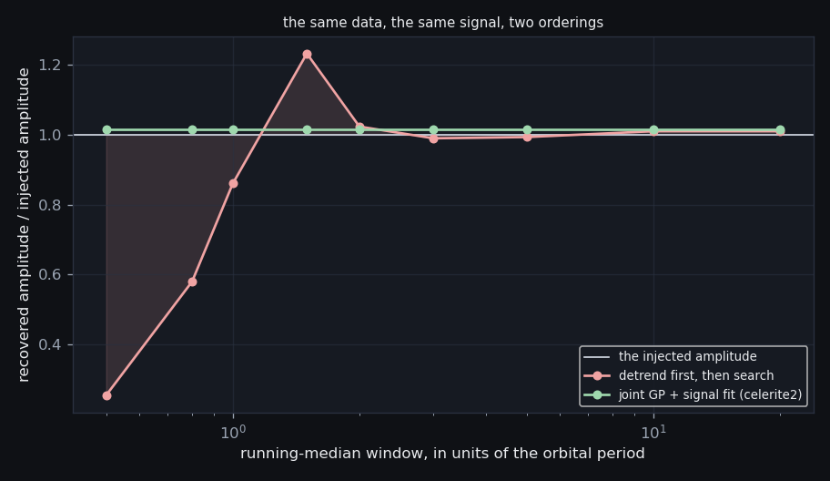
| running-median window | detrend-then-search recovers | joint GP + signal recovers |
|---|---|---|
| 0.5 × Porb | 25.4% | 101.7% |
| 0.8 × Porb | 57.9% | 101.7% |
| 1 × Porb | 86.0% | 101.7% |
| 1.5 × Porb | 123.3% | 101.7% |
| 2 × Porb | 102.4% | 101.7% |
| 3 × Porb | 99.0% | 101.7% |
| 5 × Porb | 99.3% | 101.7% |
| 10 × Porb | 101.0% | 101.7% |
| 20 × Porb | 101.0% | 101.7% |
The order changes the answer by a factor of 4.9, and not in one direction. At a window of 0.5 × Porb the running median destroys 74.6% of the injected signal. At 1.5 × Porb it returns 123.3% of it — it fabricates amplitude. The joint fit returns 101.7% at every window from 0.5 to 20 Porb — it has no window to choose.
The fabrication is the more dangerous half and is the reason this section exists. Attenuation is at least a conservative failure; an analyst who detrends at a badly chosen window and recovers 125% of a signal has no way to know it, because the true amplitude is exactly what they were trying to measure. The joint fit is not merely better on average — it removes the free parameter that does the damage.
The fast path is checked rather than trusted. celerite2's Matern32Term is a two-exponential approximation whose own docstring warns it “should be used with care”, and at its default ε = 0.01 it differs from the textbook Matérn-3/2 kernel by 1.8×10-5 relative. The module pins ε so the fast path and a dense pure-numpy Cholesky reference are the same kernel to machine precision, and the two are compared on the real sampling:
| series | N | celerite2 amplitude | dense amplitude | relative difference | Δ log-likelihood | kernel ε | verdict |
|---|---|---|---|---|---|---|---|
| ST LMi e76 g | 144 | 0.104335 | 0.104335 | 5.92e-14 | 1.14e-12 | 1e-06 | AGREE |
No stage in Phase 3 detrends before searching. §1's periodograms carry one free constant per night — a nuisance model with a single parameter per block, fitted jointly, which can only absorb power below 2.5 c/d and is five times away from the orbital band. This section is the measurement that licenses that choice: it shows what happens when a nuisance model is given enough freedom to reach the signal, and how far the night-constant model is from that regime.
{kind=link}
{kind=link}
{kind=link}
{kind=link}
{kind=link}
{kind=link}